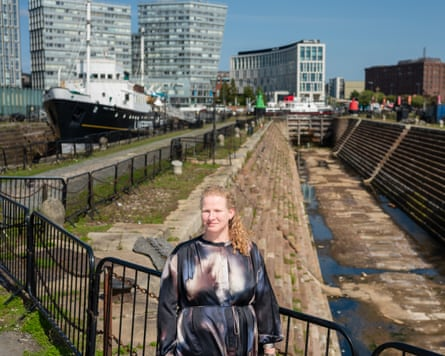

An advert for a 19th-century British slaver’s ship has been discovered in Liverpool , where a site formerly at the centre of the transatlantic trade in enslaved people is being transformed into a “contemplation space”, highlighting a long-hidden history.
Liverpool Black History Research Group (LBHRG) found the advert for the Metis, dated 25 July 1805, while looking into the history of the River Mersey’s Canning Dock, in work commissioned by National Museums Liverpool.
The 220-year-old ad, which was placed in Gore’s Liverpool General Advertiser, reads: “Apply to Lake and Brown: We have on sale by private contract, the remarkably fast sailing ship Metis, Liverpool built, about nine years old, copper fastened on the stocks, is very well found and will carry by the present act, about 185 slaves. Now lying in No 3, graving dock, where she may be inspected.”
A graving dock, or dry dock, is a basin large enough to contain a ship, which can be flooded to allow a vessel to enter, or drained to allow for a ship to be repaired. For 200 years, Liverpool’s dry docks maximised merchants’ profits by allowing for the quick and efficient maintenance of vessels, including those used to traffic people captured in Africa to the Americas during the era of transatlantic slavery.
Liz Stewart, head of the Museum of Liverpool, in front of dry docks used to repair slavers’ ships in the 18th and 19th centuries.Photograph: Pete Carr
Slavers’ ships would return to dry docks laden with consumer goods for the British market – including items traded for British-made guns, fuelling conflict and capture – LBHRG’s research revealed, in the 18th and 19th centuries.
The human toll of the dry docks’ history is being acknowledged for the first time in a £58m transformation of the waterfront, which includes plans to convert No 2 dry dock into a contemplation space for the public.
The design, involving the Liverpool community groups Writing on the Wall, 20 Stories High and Squash, along with LBHRG, was now complete, said Liz Stewart, the head of the Museum of Liverpool, with planning permission secured and work expected to begin this summer.
The ad page from the 25 July 1805 edition of Gore’s Liverpool General Advertiser.Photograph: The British Library Board
Stewart said: “When you look at the history of Liverpool in the 18th century, there are lots of references to ships euphemistically described as ‘ready for the African trade’ – and then some which are very direct, like the advert for the Metis.
“Ships came into the wet docks and, if there was a space in the dry docks they’d grab it pretty quickly. While they were being repaired, their goods were unloaded for sale on the quayside, many things produced by enslaved people or clearly linked to colonial history: rum and cotton, coffee, sugar, tobacco, fruits, Nicaragua wood (rosewood) and mother of pearl.”
LBHRG’s research revealed one of the people named in the Metis advert was the ship’s captain, John Brown, who made regular slaving voyages over a 30-year period, showing how just one individual could be involved in the enslavement of thousands of people.
The first known recorded slaving voyage from Liverpool was in 1699. The opening of Liverpool’s Old Dock, the world’s first commercial enclosed wet dock, 16 years later, made it easier for ships to get in and out, with Canning Dock’s dry docks added in the 1760s. These innovations, along with Liverpool’s location, fuelled its growth as an international port, at the heart of which was the brutal trade in enslaved African people.
Stewart added: “This site really is unique. In the late 18th century, Liverpool controlled 80% of British slaving voyages – because of these docks – but the layered history of this site had been lost. Nobody in Liverpool could be very many steps away from the slavery economy. Transatlantic slavery is so central to British history that we need to keep talking about it.”